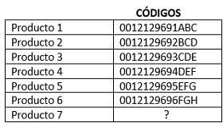
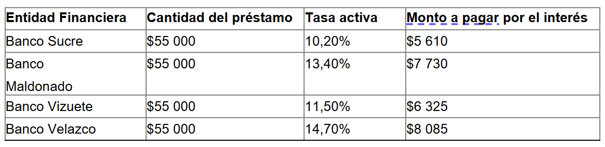

SIMULADOR UNACH Nº3
PREUNIVERSITARIO SAN MARCOS
Tiempo restante: 60:00
Pregunta 1 de 80
Para obtener un cupón del 45% de descuento en órdenes de compra, una franquicia de supermercados coloca en su portal web un requisito; en el cual, se solicita completar una clave compuesta por 5 elementos. La interfaz de la plataforma muestra sus 4 primeros:
12, 23, 35, 48,
Aplicando los criterios de series numéricas, seleccione el quinto elemento que completará la clave para obtener el cupón.
6362
60
61
Mateo es docente en una Unidad Educativa, él asigna una tarea a sus estudiantes, para lo cual entrega una tabla de letras representadas por números indicándoles que deben, inferir qué letra y número pertenece al espacio en blanco.
Q 274
Q 247
P 270
Ñ 269
Luciano es docente en una Unidad Educativa, a su salón de clase asiste una estudiante con problemas de lecto-escritura, para ayudar a mejorar su condición el docente le entrega una cuadrícula, en la cual debe, identificar cuántas letras (p) y cuántas letras (b) hay.
Identifique la respuesta correcta.
11p; 8b
10p; 7b
11p; 7b
10p; 8b
Un explorador intrépido se adentra en la selva amazónica para estudiar nuevas especies de plantas, en su investigación no solo halla nueva vegetación, sino que también inspira a los líderes comunitarios a proponer proyectos en beneficio de ese territorio.
Aplicando los conceptos relacionados a la palabra marcada en negrita, seleccione el término excluido:
AudazReceloso
Decidido
Atrevido
El registro civil de la ciudad de Quito, busca en su base de datos los cinco nombres más utilizados por la ciudadanía en los últimos meses. Solo se conocen cuatro de ellos como se muestran a continuación:
Jimena, Irina, Hilda, Gabriela,
Aplicando los criterios de series verbales, seleccione el quinto nombre más utilizado.
DanielaFranchesca
Érica
Helena
Para acceder al aula virtual de una institución de educación básica, es necesario que un usuario complete un código de validación; el cual, consta de seis elementos relacionados entre sí. Sin embargo, solamente se conocen cinco de ellos:
36098, twqzy, 17452, rxuvs, 48170,
Aplicando los criterios de ordenamiento y relación, seleccione el sexto que permitirá el acceso al aula virtual.
uyxrqUyrxq
uryxq
uypxq
Alex decide abrir un local de comida rápida cerca de un establecimiento educativo. Su familia lo felicita por la decisión, pues, el lugar es reconocido por su alta concurrencia de personas. Después de 3 meses, Alex celebra el éxito con su familia, en virtud, ya que ha sido un tiempo de prosperidad por las ventas obtenidas.
Aplicando los conceptos relacionados a la palabra marcada en negrita, seleccione el término excluido:
AbundanciaAumento
Adelanto
Adversidad
Edmundo es un reconocido cardiólogo de un hospital en Riobamba. Todos los días, utiliza su estetoscopio para escuchar los latidos del corazón de sus pacientes. Gracias a esta herramienta, el médico pude detectar problemas cardíacos o sonidos respiratorios anormales.
Aplique los conceptos relacionados en la siguiente analogía: "médico es a estetoscopio", como "_______ a _____".
Bombero - mangueraDiseñador - pinceles
Inversionista - chequera
Ingeniero - martillo
Debido al incremento de la demanda de dispositivos móviles de comunicación, una empresa se ha visto en la necesidad de adquirir más microprocesadores para no interrumpir su producción. El incremento se ha dado mensualmente como se muestra a continuación:
7 440, 7 445, 7 470, 7 595,
Aplicando los criterios de series numéricas, seleccione el número de microprocesadores que requerirá la empresa en el quinto mes.
82408230
8210
8220
Vinicio trabaja en una empresa de generación de aplicaciones web, se encuentra diseñando una aplicación web para una institución educativa en la que debe generar una cuadrícula para el entrenamiento de atención y memoria de los estudiantes, con el objetivo de que contabilicen cuántas veces se repite el siguiente código 4554756996JFGEL.
11
9
8
6
Cristian se encuentra recibiendo en su local comercial la mercadería que adquirió, él recibió 414 camisetas, 54 blusas, 174 abrigos, sin embargo, esta cantidad solo representa el 12% de la mercadería que el necesita adquirir. Tomando en cuenta esta información infiera la cantidad total que Cristian necesitaba adquirir.
3450 camisetas; 1450 blusas; 450 abrigos3450 camisetas; 450 blusas; 1450 abrigos
1450 camisetas; 450 blusas; 3450 abrigos
3450 camisetas; 450 blusas; 1540 abrigos
Elsa es una estudiante universitaria que tiene clases de biología todos los lunes y miércoles. Además, los martes toma lecciones de piano en una academia de música y los jueves acude al gimnasio para estar en forma. Durante el fin de semana, Elsa trabaja en una cafetería cerca de su casa.
Infiera la información proporcionada:
El martes, Elsa tuvo clases de biología en la universidad.El jueves, Elsa tiene lección de piano en la academia.
El sábado, Elsa trabajará en la cafetería cerca de su casa.
El miércoles, Elsa asistirá al gimnasio para estar en forma.
Adriana es una estudiante brillante que debido a dificultades económicas no ha cancelado el pago de la colegiatura. Los directivos exigen que el problema sea resuelto con prontitud, caso contrario, no podrá rendir sus evaluaciones. Al enterarse de este hecho, uno de sus maestros ha decidido interceder por ella.
Aplicando los conceptos relacionados a la palabra marcada en negrita, seleccione el término excluido:
MediarInfluir
Donar
Ayudar
Cecilia se encuentra codificando los productos de un centro comercial, esta codificación esta asignada de acuerdo a la ubicación de cada producto.
Identifique qué codificación corresponde al producto número 7.
Producto 7: 0012129797HIJ
Producto 7: 0012129699GHI
Producto 7: 0012129697GHI
Producto 7: 0012129699JKL
Kevin es un hombre muy sociable. Él es conocido por tener muchos amigos en su lugar de trabajo. Sin embargo, cuando surge un dilema entre sus compañeros, ninguno quiere verse comprometido con el problema y prefieren dejarlo solo. Este hecho le permite reflexionar sobre el refrán: "amigo de muchos, amigo de ninguno".
Aplique los conceptos relacionados en el texto presentado, seleccione la frase que mejor describa el refrán:
Es mejor tener muchos amigos superficiales que pocos amigos verdaderos.Mientras más personas conocemos, más fácil es poder confiar en alguien.
El tener muchos amigos es una señal de que eres una persona honesta.
Quien tiene muchos conocidos tiende a no formar lazos profundos con nadie
Una organización no gubernamental, busca instalar agencias de ayuda humanitaria en los cinco países que más deuda externa han adquirido. Mediante un análisis rápido se conoce que cuatro de ellos son:
Bulgaria, Eslovenia, Honduras, Kirguistán,
Aplicando los criterios de series verbales, seleccione el quinto país que completará la lista.
NicaraguaMoldavia
Omán
Laos
Henry, psicopedagogo de una Unidad Educativa, se encuentra evaluando a un grupo de estudiantes para conocer su nivel de atención y concentración, al hacerlo les asigna una actividad indicando que deben, identificar el grupo de números y letras que corresponde al espacio en blanco.
12zy; 19xw; 26vu; 33ts; 40rq; 47po; 54ñn; ? ; 68kj
61ño61ml
67ml
67ño
Carlos es el dueño de una tienda de electrónica. Entregó un total de 50 artículos en el último mes con un ingreso de $18 000,00, negociando cada televisor en $300,00 y cada computadora en $500,00. Planifique las acciones necesarias para determinar la cantidad de televisores y computadoras vendidas durante ese período.
Carlos vendió 35 televisores y 15 computadores.Carlos vendió 35 televisores y 13 computadores.
Carlos vendió 33 televisores y 13 computadores.
Carlos vendió 33 televisores y 15 computadores.
Amadeo es un hombre sabio, la gente lo respeta por su ética y humanismo, en su vida profesional siempre demostró capacidad para reflexionar sobre lo aprendido. En contraste, su compañero Mario, aunque también es un hombre ilustrado, no goza de aprecio, pues a menudo afirma una de las certezas de su conocimiento, humillando a los demás.
Aplique los conceptos relacionados en el texto presentado, seleccione el refrán que resuma la idea:
La verdad no duele, pero incomodaEl ignorante afirma, el sabio duda y reflexiona
La experiencia es la madre de la ciencia
Donde manda capitán, no manda marinero
María Fernanda se encuentra realizando un inventario del número de pantalones jeans del stand de un local de ropa, ella se da cuenta que existe un pantalón con diferente codificación a los demás, se requiere que descubra la codificación incorrecta.
Z1C1A83_Y2A1C1A75_Z1
B1C1A90_W4
Y1C1A99_X3
Gladys es diseñadora de interiores y decide remodelar su casa. Compra un cuadro en $530,00 y un jarrón en $55,00. En la factura le añaden un valor de $70,20 al valor total, debido a que pagó con tarjeta de crédito. Aplicando conceptos de matemáticas básicas, identifique el porcentaje adicional que le cobraron a Gladys por su compra.
12,50%12,00%
13,00%
11,50%
Edison es un estudiante de artes que se quedó cautivado al ver las obras destacadas de Goríbar, un maestro de la pintura. El uso de técnicas sofisticadas con el juego de formas abstractas, fueron los aspectos que más llamaron su atención. Mientras Edison intentaba entender las pinceladas complejas, sus compañeros se sentían emocionados.
Aplicando los conceptos relacionados a la palabra marcada en negrita, seleccione el término excluido:
RefinadasComplicadas
Rústicas
Rebuscadas
Durante la fiesta de cumpleaños del papá de María, ellos recordaron una anécdota divertida sobre un viaje que habían realizado el verano pasado. El relato, hizo reír a todos los presentes, creando un ambiente más relajado y ameno.
Identifique el sinónimo de la palabra marcada en negrita: "anécdota"
HistorietaMomento
Descripción
Testimonio
Un técnico en control automático, busca acceder al sistema de control de calidad en una fábrica de calzado. Para ello, es necesario completar una contraseña de acceso, la cual, está compuesta por cinco elementos. Sin embargo, solo se conocen cuatro de ellos:
fijar, echar, dañar, cocer,
Aplicando los criterios de identificación de patrones, seleccione el quinto elemento que completará la contraseña.
bogarbatear
bachear
boina
El jefe de mantenimiento de una empresa dedicada a la fabricación textil, requiere acceder a una base de datos protegida, donde se encuentran el historial de fallas de la maquinaria textil. Para ello, es necesario que se complete una contraseña, la cual, consta de cinco elementos. Sin embargo, solamente se conocen cuatro de ellos:
abrir, bailar, cocinar, disparar,
Aplicando los criterios de identificación de patrones, seleccione el quinto elemento que completará la contraseña.
EstorbarEncomendar
Encaminar
Elefantes
Felipe se encuentra en el Registro Civil, él está actualizando su cedula de identidad, al momento de la impresión nota que existen errores de escritura, para la rectificación, se requiere que, se identifique la información idéntica a la que se presente a continuación:
Washington Leonardo Godínez Estrada
1600346576
V1244V5477
1600346576
V1244V5477
Washington Leonardo Godínez Estrada
1600349576
V1244V5477
Washington Leonardo Godínez Estrada
1600846576
V1244V5477
Washington Leonardo Godínez Estrada
1600346576
V1244V5477
Mónica produce una obra de teatro, donde se colecta $16,55 por la entrada de cada infante, $28,75 por cada adulto, y para las personas de la tercera edad se tendrá un descuento del 28% respecto al costo del boleto de un adulto. A la obra ingresan 28 niños, 78 adultos y 48 personas de la tercera edad. Aplicando conocimientos matemáticos simples, seleccione las operaciones que deberá incluir la siguiente ecuación para calcular el total recaudado.

16,55 + 28 + 28,75 x 78 + 28,75 + (100% - 28%) x 48 = 3699,5
16,55 + 28 + 28,75 x 78 + 28,75 x (100% + 28%) x 48 = 3699,5
16,55 x 28 + 28,75 x 78 + 28,75 x (100% + 28%) x 48 = 3699,5
16,55 x 28 + 28,75 x 78 + 28,75 x (100% - 28%) x 48 = 3699,5
Eduardo revisa la disponibilidad de embutidos de sus tres sucursales para poder negociar la compra de nuevos productos con su proveedor. En el sistema se muestra la información siguiente, misma que no despliega todos los valores que Eduardo requiere.
Planifique las acciones matemáticas necesarias para determinar los kilogramos de tocino, mortadela y chorizo totales disponibles en sus tres sucursales.
Chorizo: 251 kg.; tocino: 252 kg.; mortadela: 253 kgChorizo: 253 kg.; tocino: 252 kg.; mortadela: 251 kg
Chorizo: 251 kg.; tocino: 253 kg.; mortadela: 252 kg
Chorizo: 253 kg.; tocino: 253 kg.; mortadela: 251 kg
Julio, estudiante universitario se encuentra realizando una actividad asignada por su docente, para esto les entrega una plantilla, en la cual debe, identificar cuántas palabras NO pertenecen al grupo, siendo la palabra principal (SOL).

11
10
9
12
Una editorial se halla redactando un instructivo de manejo de plataformas virtuales. Un analista busca conocer las cinco palabras más utilizadas en el instructivo. Para ello, se realiza una búsqueda en el software de redacción, el cual solo muestra cuatro de ellas:
opción, numeral, lista, jerarquizar,
Aplicando los criterios de series verbales, seleccione la quinta palabra más empleada en la redacción del instructivo.
IniciarHabilitar
Fijar
Girar
Alexandro es cirujano plástico, en el mes de febrero atendió a 50 pacientes y obtuvo ingresos por $118750. El costo por rinoplastia es de $3 200 y el costo por bichectomía es de $450. Planifique las acciones matemáticas necesarias para calcular el número de rinoplastias y bichectomías realizadas.
Alexandro realizó 35 rinoplastias y 15 bichectomías.Alexandro realizó 34 rinoplastias y 16 bichectomías.
Alexandro realizó 16 rinoplastias y 34 bichectomías
Alexandro realizó 15 rinoplastias y 35 bichectomías.
Gracias a un programa de protección animal, un científico notó que, el número de tortugas presentes dentro de una nueva reserva ecológica nacional se ha ido incrementado anualmente, como se muestra a continuación:
20, 39, 77, 153, 305,
Aplicando los criterios de series numéricas, seleccione la cantidad de tortugas que se esperaría tener al sexto año.
608609
610
607
El gerente de ventas de una empresa dedicada a la distribución de productos lácteos, requiere acceder a una base de datos donde se encuentra la información concerniente a las compras realizadas por sus principales clientes. Para ello, debe completar una contraseña compuesta por cinco elementos que guardan cierta relación, como se muestra a continuación:
arpeo, enojo, ileso, otero,
Aplicando los criterios de identificación de patrones, seleccione el quinto elemento que completará la contraseña.
urbanoUvero
usura
unto
Andrés es investigador y desea realizar un informe acerca de las exportaciones de ciertos productos en el año 2023
Al tratar de realizar el artículo se percata que el valor total de exportaciones de cacao es incorrecto. Corrija el error y seleccione el valor correcto.
$14 760$16 570
$17 450
$15 740
Alex y Miguel son dos sacerdotes franciscanos que sirven a Cristo con respeto y devoción. Alex se caracteriza por tener un humor desbordado. De hecho, la gente lo considera el cura más divertido de la iglesia. Por otro lado, Miguel es más serio que Alex, este clérigo sobresale por su labor humanitaria y es el misionero más generoso de la parroquia.
Infiera la información proporcionada:
Miguel es un franciscano generoso y Alex un cura divertido.Alex y Miguel son dos clérigos generosos de la parroquia.
Miguel es un sacerdote serio y Alex un cura humanitario.
Alex y Miguel son sacerdotes franciscanos que poseen humor
Para la reunión navideña de la empresa, los directivos organizan un almuerzo para las familias del personal de producción. Al encontrarse en el evento, algunas personas critican la decoración del lugar y el servicio recibido. Dichos comentarios, incomodaron a los jefes, quienes prepararon la reunión como muestra de gratitud a sus trabajadores.
Aplique los conceptos relacionados en el texto presentado, seleccione el refrán que resuma la idea:
Las cosas, claras, y el chocolate, espesoA caballo regalado no le mires el diente
Hablar es plata, callar es oro
La arrogancia es en proporción a la ignorancia
Estuardo trabaja en un banco, al intentar ingresar al sistema no lo logra debido a que no recuerda el último digito de la contraseña, lo que recuerda es que esta corresponde a una secuencia de números y letras, siendo este el caso, identifique cuál es el dígito.
21zy 20xw 22vu 21ts 23rq 22po 24ñn ?
23op25op
23ml
25ml
Germán es dueño de una confitería, en el mes de marzo tuvo ventas por $200. En este mes los únicos productos que vendió fueron chupetes y chocolates. El precio unitario por chocolate fue de $0,50 y el precio unitario por chupete fue de $0,10. Se conoce que el total de productos vendidos fue de 600. Planifique las acciones matemáticas necesarias para calcular el número de chocolates y chupetes vendidos en el mes de marzo.
Se vendieron 350 chocolates y 250 chupetes.Se vendieron 355 chocolates y 245 chupetes.
Se vendieron 375 chocolates y 225 chupetes.
Se vendieron 325 chocolates y 275 chupetes.
Jimena desea abrir un nuevo local, para lo cual planea adquirir un préstamo. Decide comparar la tasa activa anual de diferentes entidades financieras.
Al analizar la tabla se percata que el monto a pagar por el interés del Banco Maldonado es incorrecto. Corrija el error y seleccione el valor correcto.
$7 370$7 070
$7 770
$7 330
Un contador debe ingresar a la plataforma de declaración de impuestos. Para lo cual, el sistema de soporte al usuario le indica que debe completar una contraseña compuesta por cinco elementos. Si se conocen que los cuatro primeros son:
yelmo, volatilidad, satinar, parvulario,
Aplicando los criterios de series verbales, seleccione el quinto elemento que completará la contraseña.
MentorNucleón
Ligamento
Ñu
Nohemí se encuentra revisando los pagos que debe realizar este mes en su empresa, el pago que recibe cada trabador por hora de trabajo es de 12,56 dólares, Rolando trabajó 23 horas, Tenorio 22 horas, Galo 34 horas, Marco 26 horas, tomando en cuenta esta información, infiera el valor total que debería recibir cada trabajador por sus horas de trabajo.
Rolando 288,88; Tenorio 276,32; Galo 427,04; Marco 362,56Rolando 288,88; Tenorio 276,32; Galo 427,04; Marco 326,65
Rolando 288,88; Tenorio 276,32; Galo 427,04; Marco 326,56
Rolando 288,88; Tenorio 276,32; Marco 427,04; Galo 326,56
En la ciudad de Ambato, las autoridades están planteando una ordenanza para reducir la congestión vehicular en el centro de la ciudad. Para lograrlo, han considerado oportuno realizar encuentros públicos con los ciudadanos para recopilar comentarios de los residentes sobre la política propuesta, con la finalidad de garantizar la ejecución de la misma. Infiera la información proporcionada:
La nueva ordenanza se enfoca al orden vehicular en el centro de la ciudad.La congestión vehicular es un problema de interés para las autoridades.
Las autoridades consideran las ideas de las personas previo a la ordenanza.
Las autoridades están preocupadas por la opinión de las personas.
Alexandra compra nuevo mobiliario para su estudio jurídico, y Marcela le envía su correspondiente factura:
Los valores unitarios de las sillas giratorias y anaqueles no son los correctos. Corrige la información y selecciona las cantidades que deberían haberse colocado en la factura.
$188,00 para los anaqueles y $188,00 para las sillas.$168,00 para los anaqueles y $188,00 para las sillas.
$188,00 para los anaqueles y $168,00 para las sillas.
$168,00 para los anaqueles y $168,00 para las sillas.
En una reunión del trabajo de Carla, el gerente zonal presenta los datos alcanzados de las ventas del primer trimestre del año. Sin embargo, durante su intervención el gerente se percata que existe un error en la información presentada, por ello, se disculpa y procede a corregir las cifras. Ante lo cual, sus compañeros expresan "el que tiene boca se equivoca".
Aplique los conceptos relacionados en el texto presentado, seleccione la frase que mejor describa el refrán:
Los errores demuestran inseguridad y temor al hablar sobre un tema.Los errores deben ser advertidos en privado para que puedan ser corregidos.
Las correcciones de un error no deben realizarse a la vista de las personas.
La importancia de cometer errores es reconocerlos y corregirlos sin temor.
Brenda cierra la venta de un local comercial en $69 850,00, luego de una ardua negociación donde el cliente consiguió un descuento del 6% del precio originalmente solicitado.
Aplicando conceptos de operaciones matemáticas simples, calcule el monto inicial que requería Brenda.
El local comercial tenía un precio inicial de $74 300,51.El local comercial tenía un precio inicial de $74 308,51.
El local comercial tenía un precio inicial de $74 380,51.
El local comercial tenía un precio inicial de $74 388,51.
Un analista de sistemas busca reiniciar un servidor, con la finalidad de restablecer sus condiciones iniciales de fábrica. Para lograrlo, el sistema le solicita completar una contraseña de cinco elementos. En la pantalla se muestran sus cuatro primeros:
nulidad, literal, jefatura, helipuerto,
Aplicando los criterios de series verbales, seleccione el quinto elemento que permitirá resetear el ordenador.
FlúorIsótopo
Estado
Garabato
Mientras ambos animales recorrían la llanura, las vacas exploraban con curiosidad los verdes pastos. Aplique los conceptos relacionados en la siguiente analogía: "caballo es a potrillo", como "_______ a _______".
Vaca - terneraBurro - cría
Yegua - corcel
Toro – pony
En una entidad bancaria, se planifica dotar de máquinas contadoras de efectivo para sus 24 agencias. Daniela, su gerente, pone un límite presupuestario de $70 000,00 para esta inversión. El proveedor le ofrece máquinas de velocidad media por $2 250,00 y de velocidad alta por $3 250,00. Planifique las acciones matemáticas necesarias y especifique el número de máquinas de cada tipo que Daniela podrá adquirir.
Daniela podrá dotar de 16 máquinas de velocidad alta y 8 de velocidad media.Daniela podrá dotar de 18 máquinas de velocidad alta y 6 de velocidad media.
Daniela podrá dotar de 19 máquinas de velocidad alta y 5 de velocidad media.
Daniela podrá dotar de 17 máquinas de velocidad alta y 7 de velocidad media.
En una tienda de instrumentos musicales, a Josué le asignan vender al menos 16 instrumentos entre guitarras y bajos eléctricos, con un ingreso mínimo de $7 200,00. Los precios unitarios de cada bajo y guitarra son de $360,00 y $480,00 respectivamente.
Planifique las acciones matemáticas necesarias y determine la cantidad de guitarras y bajos que Josué deberá vender para cumplir su meta.
Josué debe vender al menos 12 guitarras y 4 bajos eléctricos.Josué debe vender al menos 11 guitarras y 5 bajos eléctricos.
Josué debe vender al menos 13 guitarras y 3 bajos eléctricos.
Josué debe vender al menos 14 guitarras y 2 bajos eléctricos.
Iván recibe la cotización para automatizar su línea de producción de aceites esenciales. Al revisarla nota que Pedro olvidó llenar los totales de su propuesta.
Planifique las acciones matemáticas requeridas para encontrar el total a pagar que Iván deberá invertir en la automatización de su planta.
El total a pagar es de $14 042,71.El total a pagar es de $14 052,71.
El total a pagar es de $14 062,71.
El total a pagar es de $14 032,71.
Los podcasts son una herramienta educativa popular. Estos audios permiten a los oyentes acceder a todo tipo de información. Además, abarcan una amplia variedad de temas, desde noticias sobre política hasta historias de ciencia ficción. La facilidad de producir y distribuir este contenido ha permitido que voces diversas lleguen a una audiencia global, lo que refleja la libertad del conocimiento en la era digital.
Infiera la información proporcionada:
Los podcasts son audios académicos que facilitan el acceso a la información digital.Los podcasts no son fáciles de crear, pero reflejan la libertad del conocimiento.
Los podcasts son herramientas educativas con contenido de diversos temas.
Los podcasts permiten a los oyentes acceder a información de manera gratuita.
Angie es una mujer altruista que durante los últimos años ha dedicado su esfuerzo, tiempo y recursos económicos para levantar un proyecto social que por motivos ideológicos quedó en el abandono. Ella espera contribuir a la nación a través de su servicio.
Identifique el sinónimo de la palabra marcada en negrita: "altruista".
DadivosaEsmerada
Ilustre
Admirable
Un analista económico requiere acceder a una hoja de cálculo protegida donde reposa la información concerniente al flujo de caja de una empresa dedicada a la plantación de café. Para ello, debe completar una contraseña compuesta por cinco elementos. En pantalla solamente se muestran cuatro de ellos:
activar, bipolar, caminar, dedicar,
Aplicando los criterios de identificación de patrones, seleccione el quinto elemento que completará la contraseña.
esperarexceptuar
excepto
esponjar
Para descargar una visa temporal de turismo, válida por 90 días, un turista argentino deberá completar una clave compuesta por 5 elementos. La interfaz de la embajada americana le muestra sus 4 primeros.
loro, negación, opresor, quitar,
Aplicando los criterios de series verbales, seleccione el quinto elemento que completará la clave.
RentaSustentable
Ubicación
Terror
El gerente de una empresa textil analiza el caso hipotético que podría ocurrir en el nuevo segmento de mercado que están incursionando, enfocado a una tendencia positiva. La experiencia del gerente transmite confianza al personal para este nuevo proceso.
Identifique el sinónimo de la palabra marcada en negrita:
InnegableIncierto
Inequívoco
Indudable
Mario se encuentra realizando un servicio delivery, para realizar la entrega el ingresa la información recibida al buscador, pero no obtiene resultados, por lo que, nota que existen errores que se produjeron al momento de copiar estos datos, él debe, identificar si los nombres y direcciones son iguales o distintos.
NOMBRES DISTINTOS Y DIRECCIONES DISTINTAS
NOMBRES IGUALES Y DIRECIONES IGUALES
NOMBRES IGUALES Y DIRECCIONES DISTINTAS
NOMBRES DISTINTOS Y DIRECCIONES IGUALES
Para descargar el audiolibro "El Arte de la Guerra" de la plataforma "AudioRecords", un usuario deberá completar una clave compuesta por 5 elementos. En la interfaz de la plataforma se muestran sus 4 primeros:
mapa, maquinar, marmita, masticar,
Aplicando los criterios de identificación de patrones, seleccione el quinto elemento que completará la clave.
marinerometal
matemática
mausoleo
En una empacadora de alimentos, en la ciudad de Quito, la puerta de acceso al cuarto frío sufre una avería. Para reiniciar su sistema, la persona a cargo deberá completar una contraseña compuesta por 5 elementos. El panel de la puerta muestra sus 4 primeros:
17, 34, 102, 408,
Aplicando los criterios de series numéricas, seleccione el quinto elemento que completará la contraseña.
20382041
2040
2039
Juan es un agricultor que cuida sus tierras con esmero y dedicación. Todos los días trabaja bajo el sol y riega con cariño cada planta. Gracias a su ardua labor, su familia siempre tiene suficientes alimentos en la mesa. Además, su constancia en el campo le ha permitido cosechar buenas ganancias, lo que le ha dado la oportunidad de proveer a sus hijos una educación de calidad.
Aplique los conceptos relacionados en el texto presentado, seleccione el refrán que resuma la idea:
Quien bien siembra, bien cosechaSi quieres comer pan, siembra en un cantonal.
Tan solo debes sembrar, lo que puedes cosechar.
Hombre prevenido vale por dos
Susana revisa la cantidad de cajas que ha despachado a sus clientes para proceder a su facturación mediante la información que le ha sido entregada y se muestra como sigue:
Susana detecta inconsistencias en la información sobre las cajas cuadradas y hexagonales entregadas a sus clientes mayoristas. Corrige los errores y selecciona los valores correctos que deberían haberse mostrado en la tabla.
3 566 cajas hexagonales y 3 556 cajas cuadradas.3 556 cajas hexagonales y 3 556 cajas cuadradas.
3 556 cajas hexagonales y 3 566 cajas cuadradas.
3 566 cajas hexagonales y 3 566 cajas cuadradas.
Lisa vende boletos para un bingo que se realizará después de tres semanas. Las personas que compren durante la primera semana, reciben una rebaja del 34%, mientras que quienes compren durante la segunda y tercera semana deberán pagar $10,50 por el ticket. En la primera semana vende 56 boletos, en la segunda 90 y en la tercera 110.
Aplicando conocimientos matemáticos simples, elija las operaciones oportunas en la ecuación para obtener el total recaudado:
10,5 + 110 + 10,5 x 90 + 10,5 x (100% + 34%) x 56 = 2488,0810,5 x 110 - 10,5 x 90 + 10,5 x (100% - 34%) x 56 = 2488,08
10,5 + 110 + 10,5 x 90 - 10,5 + (100% - 34%) x 56 = 2488,08
10,5 x 110 + 10,5 x 90 + 10,5 x (100% - 34%) x 56 = 2488,08
Jaime es dueño de un local comercial, él se encuentra separando las prendas de vestir según sus códigos, por lo que requiere identificar cuántas prendas corresponden al mismo código: 3654001369885.

13
11
10
12
Melisa negocia un contrato con el gobierno para la dotación de 11 200 libros para niños de etapa preescolar a $3,45 cada uno. Al cerrar el negocio, se concede un 4,30% de reducción en el monto final. Aplicando conceptos de operaciones matemáticas simples, especifique el valor final del contrato.
El monto final del contrato será de $36 978,48.El monto final del contrato será de $36 977,48.
El monto final del contrato será de $36 987,48.
El monto final del contrato será de $36 988,48.
Para acceder a los planos de los rodetes de una nueva generación de bombas centrífugas, un ingeniero debe ingresar una contraseña de seguridad compuesto por cinco elementos. Sin embargo, el monitor le muestra en pantalla solo cuatro de ellos:
tabaco, tejado, tildar, tolete,
Aplicando los criterios de identificación de patrones, seleccione el quinto elemento que completará la contraseña.
turismotuberculosis
Turnar
tuba
Lorena se encuentra viajando, en este viaje ella debe realizar una escala en España, para poder realizarla ella debe seguir un orden lógico.
Identifique el orden a seguir.
1. ir al aeropuerto, esperar el avión, comprar el boleto, subir al avión, bajar del avión, comprar el boleto, subir al avión, bajar del avión, salir del aeropuerto.
2. ir al aeropuerto, comprar el boleto, subir al avión, esperar el avión, bajar del avión, comprar el boleto, subir al avión, bajar del avión, salir del aeropuerto.
3. ir al aeropuerto, comprar el boleto, esperar el avión, subir al avión, bajar del avión, comprar el boleto, bajar del avión, subir al avión, salir del aeropuerto.
4. ir al aeropuerto, comprar el boleto, esperar el avión, subir al avión, bajar del avión, comprar el boleto, subir al avión, bajar del avión, salir del aeropuerto.
4
1
2
Para su oficina de marketing y publicidad, Silvana compra 16 licencias de software para ilustración por $670,38 cada una y 18 para edición de fotografía por $595,92. Aplicando conceptos de resolución de problemas matemáticos simples, determine los subtotales que tendrá que consignar por cada tipo de licencia.
Edición de fotografía: $10 736,56; ilustración: $10 746,08.Edición de fotografía: $10 776,56; ilustración: $10 766,08.
Edición de fotografía: $10 726,56; ilustración: $10 726,08.
Edición de fotografía: $10 746,56; ilustración: $10 756,08.
Andrés está rindiendo una evaluación de atención y concentración, su docente le entregó una cuadrícula de letras representadas con números y le pide que descifre el código correcto según la palabra entregada. "ADOLESCENTE"

1125012200775500737300
1125012200775500773300
1125012200775050773300
1125012200775507073300
Un biólogo notó que, debido a la deforestación, el número de avistamientos de aves exóticas, ha ido disminuyendo mensualmente como se muestra a continuación:
387, 382, 372, 357, 337,
Aplicando los criterios de series numéricas, seleccione la cantidad de avistamientos que se esperaría tener al sexto mes.
316312
310
314
Hernán es supervisor y desea analizar el número de reactivos hechos por sus trabajadores mensualmente. Conoce que el promedio mensual de reactivos realizados es de 38. Al analizar la tabla se percata que ciertos valores han sido omitidos.

Aplicando conceptos de operaciones matemáticas simples, identifique el número de reactivos efectuados por William.
William realizó 41 reactivosWilliam realizó 42 reactivos
William realizó 43 reactivos
William realizó 40 reactivos
Un estudiante requiere activar nuevos complementos de un software de simulación térmica. Para ello, es necesario completar un código de validación, el cual, consta de seis elementos relacionados entre sí. Sin embargo, solamente se conocen cinco de ellos:
82960, mgnke, 15374, fjhli, 58304,
Aplicando los criterios de ordenamiento y relación seleccione el sexto que activarán los complementos.
jhmeijnhei
jmehi
jmhei
Carolina dejó como herencia a su hija una caja fuerte, no le entregó una contraseña, pero en una nota le indicó que, para descifrar la misma debe elegir el número que corresponde a cada letra, siendo la palabra clave (DIAMANTE) identifique la contraseña de la caja fuerte.

8587009900717178
8587009900771178
8587009600771178
8587006900771178
Juan, docente en una unidad educativa asigna una actividad a sus estudiantes, para ello, les explica que Doménica se encuentra realizando el proceso de preparación de un pastel y les pide que elijan cuál es el orden más lógico que debe seguir para la preparación.
1.- comprar los ingredientes, preparar la mezcla, poner la mezcla en el molde, prender el horno, sacar el pastel del horno, apagar el horno.
2.- comprar los ingredientes, preparar la mezcla, poner la mezcla en el molde, prender el horno, apagar el horno, sacar el pastel del horno.
3.- comprar los ingredientes, preparar la mezcla, poner la mezcla en el molde, sacar el pastel del horno, prender el horno, apagar el horno.
4.- comprar los ingredientes, preparar la mezcla, prender el horno, apagar el horno, sacar el pastel del horno, poner la mezcla en el molde.
3
1
2
En la clase de lengua y literatura, en la actividad áulica, el docente presenta una tabla que contiene letras "b" y "d", para el desarrollo de la actividad, se requiere que los estudiantes identifiquen cuántas letras "b" y "d" existen.

b = 15, d = 17
b = 17, d = 19
b = 16, d = 18
b = 18, d = 20
Patricia es directora de una empresa que ha ido creciendo durante su gestión. Ella ha sido elogiada por motivar a su equipo y alcanzar metas significativas en proyectos sociales. Sin embargo, en los dos últimos años, se ha presentado una crisis económica inesperada. Patricia muestra habilidad para superar este obstáculo y toma decisiones efectivas. Este hecho hace que los miembros de la organización elogien su liderazgo.
Aplique los conceptos relacionados en el texto presentado, seleccione el refrán que resuma la idea:
El líder verdadero se forja en la adversidad.En la unión está la fuerza.
En tiempos de bonanza, cualquier capitán puede navegar.
Cuando el río suena piedras lleva.
Entre los habitantes de San Juan se desata la algarabía por la llegada de un circo que promete un espectáculo de calidad. Los niños corren por las calles con deleite, los comerciantes montan puestos de comida y el ánimo de la gente contagia a los visitantes de la plaza central.
Aplicando los conceptos relacionados a la palabra marcada en negrita, seleccione el término excluido:
SosiegoAlboroto
Ruido
Jerga
Paulina se encuentra realizando una actividad propuesta por su docente, para esto el docente entregó una cuadrícula de letras representa por números indicándole que debe, inferir qué código se obtiene al elegir los dígitos que representan a cada letra de la siguiente palabra: COMPUTADORA.

5501264389335265018256
5501264389353625018256
5501264389335625018256
5501264389335625012856
Una red social busca conocer los cinco nombres de usuario más empleados al momento que se registran en su plataforma. Sin embargo, la plataforma solamente muestra una lista con cuatro de ellos:
Nicolás, Lautaro, Julio, Héctor,
Aplicando los criterios de series verbales, seleccione el quinto elemento que completará la lista.
IrvinEnrique
Fernando
Gregory
Fanny revisa en el sistema de calificaciones los promedios de los estudiantes que rindieron el examen de suspensión. La información se muestra como sigue:
Planifique las acciones matemáticas requeridas para determinar las calificaciones del examen de suspensión de Martín, Diana y Doménica que no se muestran en el sistema.
Martín: 7,30; Diana: 7,40 y Doménica: 7,40.Martín: 7,40; Diana: 7,30 y Doménica: 7,40.
Martín: 7,30; Diana: 7,30 y Doménica: 7,40.
Martín: 7,40; Diana: 7,40 y Doménica: 7,30.
Carla es docente de una unidad educativa quien asigna una tarea a sus estudiantes, para lo cual, les entrega una palabra y les indica que deben encontrar su orden inverso. Identifica el orden inverso de la siguiente palabra: industrialización
1.- nóicazilaritsudni
2.- nóicaziliartsudni
3.- nóicazilairtsudni
4.- nóicazilairtusdni
4
3
2
En la ciudad de Guayaquil se realizará un desfile, en el cual, grupos de bastoneras de diferentes colegios se presentarán. Ellas deciden contratar servicios de maquillaje. La encargada de ofrecer estos servicios les informa que a partir de 15 personas obtienen un 6% de descuento. Al analizar la factura se percata que ciertos valores han sido omitidos.

Aplicando conceptos de operaciones matemáticas simples, identifique el valor total que deberán pagar.
El valor total de la factura es de $1 297,10.El valor total de la factura es de $1 779,10.
El valor total de la factura es de $1 927,10.
El valor total de la factura es de $1 192,10